実験の詳細
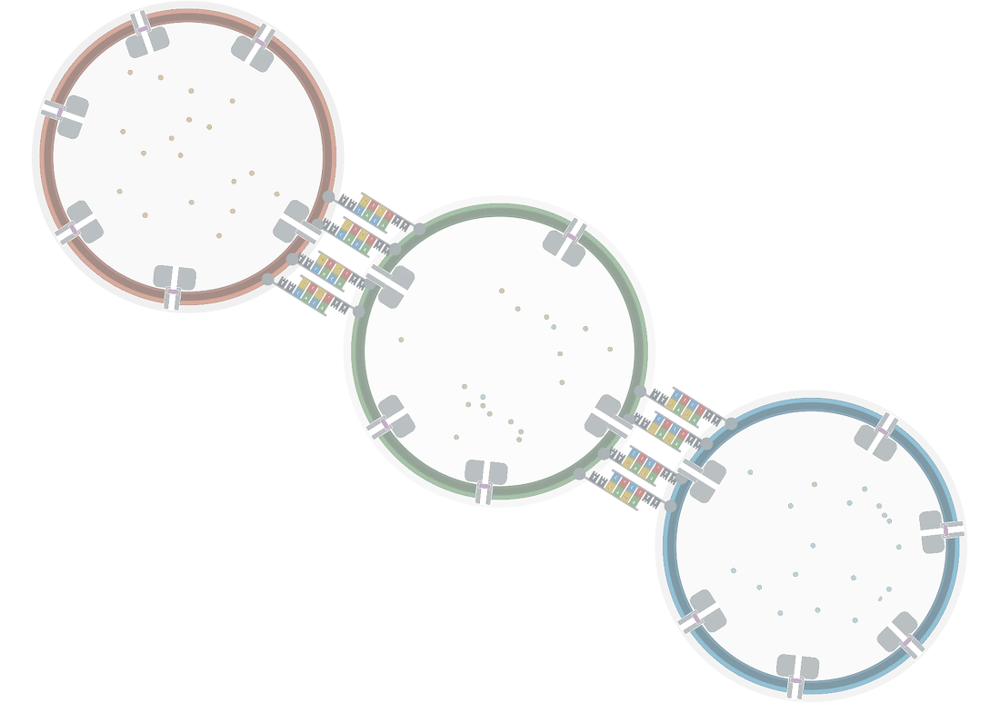
GUVの作製
GUVを作る
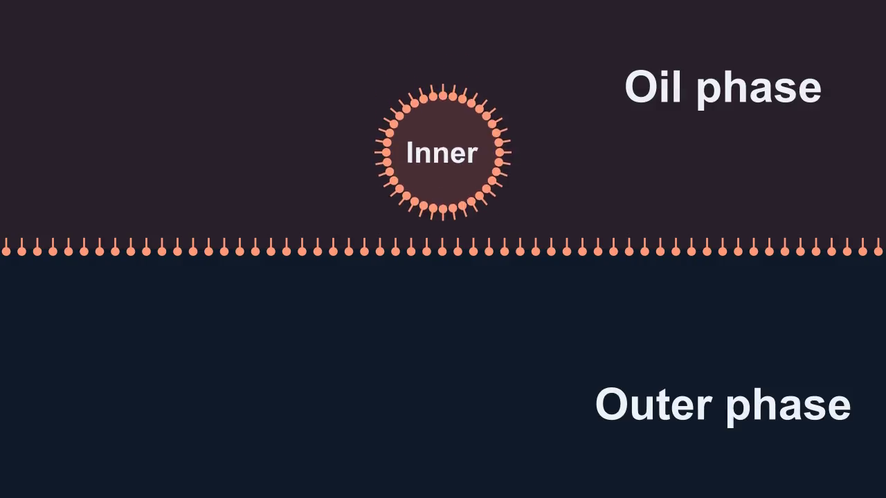
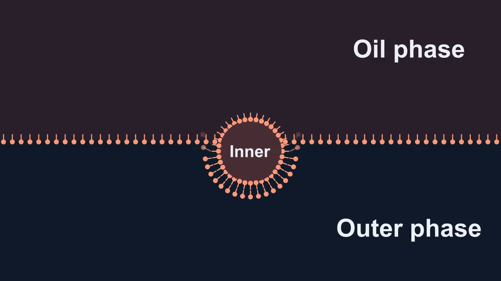
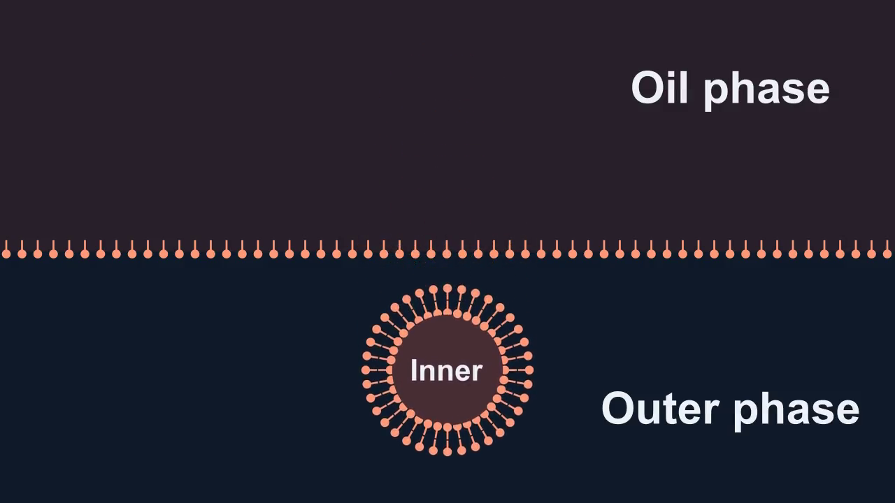
- 内水相を脂質入りオイルと混合した。
- 混合液を30秒間ボルテックスし、油中水滴型（W/O）のエマルションを作製した。
- 次に、エマルションを外水相に静かに重ねた。
- 5分間静置した。
- 試料をまず3000 × gで30分間遠心した。
次に、5000 × gで10分間遠心した。
いずれも24 °Cで行った。 - 遠心後、上層のオイルを除いた。GUV懸濁液150 µLを回収し、洗浄用の外水相300 µLを加えた。
混合液を5000 × g、24 °Cで3分間再遠心した。
エマルション移送法で使う脂質入りオイル・内水相・外水相を調製した。 [1]
脂質入りオイル
脂質をクロロホルムに溶解した。
- ガラス管内で窒素ガスを使い、クロロホルムを蒸発させた。
- 真空デシケーターで1時間乾燥し、脂質膜を形成した。
- ミネラルオイルを300 µL添加した。
- 60 °Cで60分間の超音波処理を行い、脂質をオイルに分散させた。
| 成分 | 最終濃度 |
|---|---|
| POPC | 5 mM |
| NBD-PE | 0.05 mM |
| コレステロール | 3.0 mM |
内水相
| 成分 | 最終濃度 |
|---|---|
| スクロース | 0.3 M |
| Tris-HCl | 10 mM |
| スルホローダミンB | 1 µM |
外水相
| 成分 | 最終濃度 |
|---|---|
| グルコース | 0.3 M |
| Tris-HCl | 10 mM |
α-ヘモリシンの精製
αHLの精製手順
αHLは以下の手順で精製した。
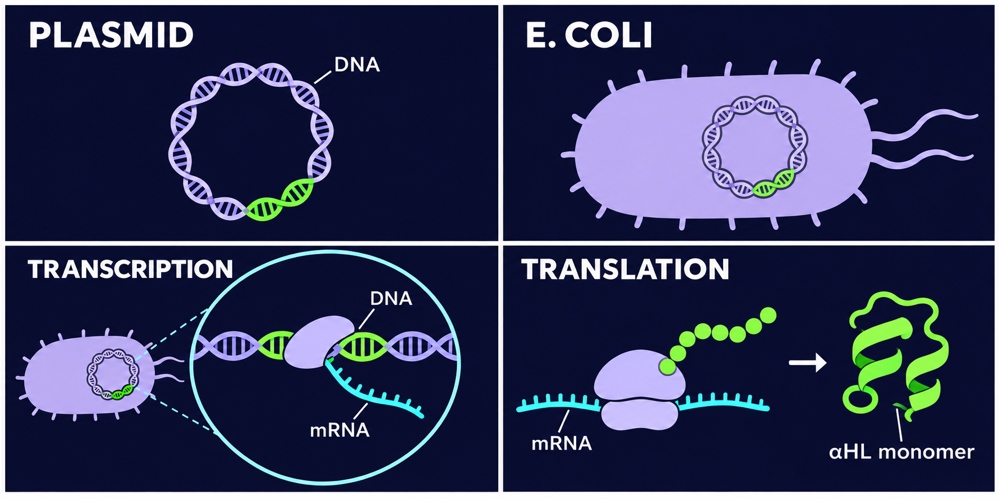
- 大腸菌でプラスミドからαHLを発現させた。
- Hisタグを用いてタンパク質を精製した。
- 試料を脱塩し、20 mM HEPES、150 mM NaCl、pH 7の緩衝液に溶解した。
- 電気泳動（28 mA、60分）で精製を確認した。
| 成分 | 最終濃度 |
|---|---|
| HEPES | 20 mM |
| NaCl | 150 mM |
α-ヘモリシンによるGUVの孔形成
膜に孔を形成する
孔形成実験用のGUVの作製時に、αHLは内水相に添加された。
脂質入りオイルと外水相には、GUV作製節と同じものを用いた。
膜の安定化とαHLの挿入を促すため、オイルに3.0 mMのコレステロールを添加した。
内水相
| 成分 | 最終濃度 |
|---|---|
| スクロース | 0.3 M |
| Tris-HCl | 10 mM |
| スルホローダミンB | 10 mM |
| αHL | 25 ng/µL |
スルホローダミンBの原液濃度は100 mMであった。
脂質入りオイル
| 成分 | 最終濃度 |
|---|---|
| POPC | 5 mM |
| NBD-PE | 0.05 mM |
| コレステロール | 3.0 mM |
外水相
| 成分 | 最終濃度 |
|---|---|
| グルコース | 0.3 M |
| Tris-HCl | 10 mM |
作製条件
内水相と脂質入りオイルを混合し、30秒間ボルテックスした。エマルションを外水相に重ね、5分間静置した。24 °Cで3000 × g、30分間遠心し、続いて24 °Cで5000 × g、10分間遠心した。
TRIMEBによる孔の閉塞
αHLの孔をふさぐ
内水相に25 ng/µLのαHLを添加した。
外水相に4 mMのTRIMEBを添加した。
次に、αHLの孔がふさがるかを評価した。
外水相
| 成分 | 最終濃度 |
|---|---|
| グルコース | 0.3 M |
| Tris-HCl | 10 mM |
| TRIMEB | 4 mM |
内水相
| 成分 | 最終濃度 |
|---|---|
| スクロース | 0.3 M |
| Tris-HCl | 10 mM |
| スルホローダミンB | 10 mM |
| αHL | 25 ng/µL |
脂質入りオイル
| 成分 | 最終濃度 |
|---|---|
| POPC | 5 mM |
| NBD-PE | 0.05 mM |
| コレステロール | 3.0 mM |
GUVへのDNAの導入
DNAの導入と染色
脂質結合DNAを内水相に添加した。
作製後、GUVをSYBR Goldで染色した。
外水相には、GUV作製節と同じ溶液を用いた。
脂質入りオイルにはNBD-PEを加えなかった。
脂質入りオイル
| 成分 | 最終濃度 |
|---|---|
| POPC | 5 mM |
| コレステロール | 3.0 mM |
内水相
| 成分 | 最終濃度 |
|---|---|
| スクロース | 0.3 M |
| Tris-HCl | 10 mM |
| スルホローダミンB | 1 µM |
| 脂質結合DNA | 100 nM |
外水相
| 成分 | 最終濃度 |
|---|---|
| グルコース | 0.3 M |
| Tris-HCl | 10 mM |
DNAの精製
DNAと脂質の結合・精製
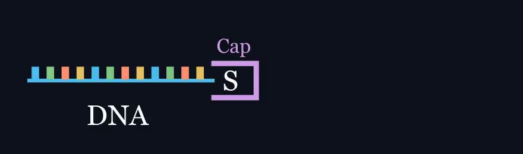
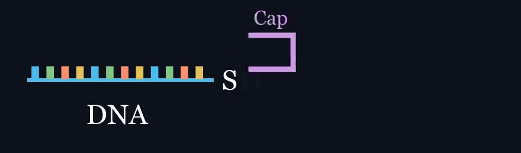
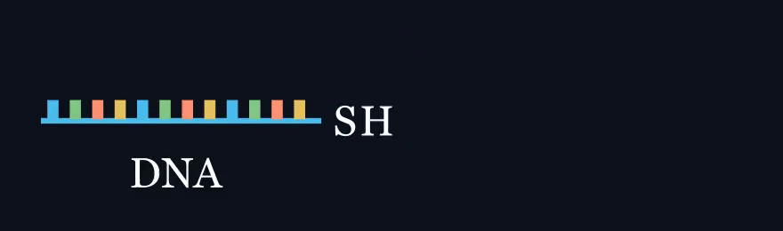
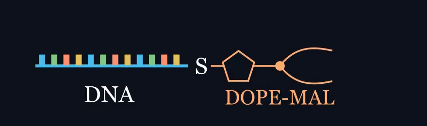
チオール修飾DNAをマレイミド基付き脂質に結合させた。
次に、脂質結合DNAをGUVの膜に挿入した。
以下の手順でDNAを精製した。
- チオール保護基をTCEPで除去した（室温、30分）。
- ゲルビーズを用いてDNAを精製した。
- DNAをDOPE-MALと反応させた（室温、2時間）。
- 脂質結合DNAは、C3カラムを装着したHPLCで回収した。
- DNA濃度は260 nmの吸光度から算出した。
脱保護反応液
| 成分 | 添加量（µL） | 最終濃度 |
|---|---|---|
| SH-DNA | 10 | 20 µM |
| TCEP | 25 | 50 mM |
| KCl | 7 | 140 mM |
| HEPES | 1.25 | 25 mM |
| UPW | 6.75 | — |
| 全量 | 50 | — |
DNAと脂質の結合反応
各回収DNA試料の濃度と液量からDNAの物質量を求めた。DOPE-MALがDNAの50モル当量となるよう、5 mM DOPE-MALのDMSO溶液の添加量を計算し、算出した量を加えた。
DNAの溶解にはTE（Tris-HCl : EDTA = 10 : 1）を用いた。
DNAレセプターの二量体形成
DNAペアの会合を調べる
GUVを含まない溶液中で、相補ペアの二量体形成と、非相補ペアの非特異的な会合をゲル電気泳動で評価した。
4種類のDNAから2種類を選び、表に示す全6組で電気泳動を行った。
実験した組み合わせ（✓ 実施）
| L1 | R1 | L2 | R2 | |
|---|---|---|---|---|
| L1 | ✓ | ✓ | ✓ | |
| R1 | ✓ | ✓ | ||
| L2 | ✓ | |||
| R2 |
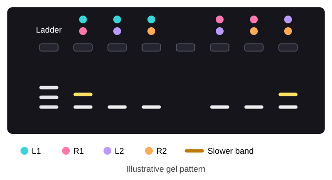
DNA原液は1 µMを目安とし、ローディングバッファー添加前の試料では各鎖0.1 µMを目標とした。
泳動条件と試料の配合を表示
L1、R1、L2、R2から2本ずつ選んだ全6通りを、10%ポリアクリルアミドゲルで評価した。
ローディングバッファーを加える前の各鎖の目標濃度は0.1 µMである。
25 °C、100 V・20 mAの設定で60分間泳動した。
ポリアクリルアミドゲルの組成（公称全量10 mL）
| 成分 | 原液 | 添加量 | 最終濃度 |
|---|---|---|---|
| MgCl₂ | 1 M | 50 µL | 5 mM |
| TBE | 10× | 1 mL | 1× |
| Acrylamide/Bis (29:1) | 40% | 2.5 mL | 10% |
| Milli-Q | — | * | — |
| APS | 10% | 100 µL | 0.1% |
| TEMED | — | 10 µL | † |
* Milli-Q水を10 mLの目盛りまで加えた後にAPSとTEMEDを添加した。10 mLが添加前か添加後かは要確認。
† TEMEDは記録では0.01%。10 µLを最終10 mLに加えた場合の計算値は0.1%（v/v）。
全試料に共通する成分（ローディングバッファー添加前）
| 成分 | 原液 | 添加量 | 最終濃度 |
|---|---|---|---|
| Tris-HCl | 100 mM | 1.0 µL | 10 mM |
| NaCl | 1 M | 1.5 µL | 150 mM |
ローディング時の配合
| レーン | 試料 | 6×ローディングバッファー | ウェルへの添加量 |
|---|---|---|---|
| 1 | 10 µL DNA ladder (10 ng/µL) | 2 µL | 要確認 |
| 2–7 | 10 µL DNA sample | 2 µL | 3 µL |
DNAを介したGUV接合
DNAを介した選択的なGUV接合を調べるため、内水相の蛍光が異なる3種類のGUVを用いた。
赤色・無蛍光・青色の順に並ぶ接合を目印とし、位相差像でGUV同士の接触を確認した。
同じ視野の蛍光像で、接触したGUVの種類と並び順を判別した。
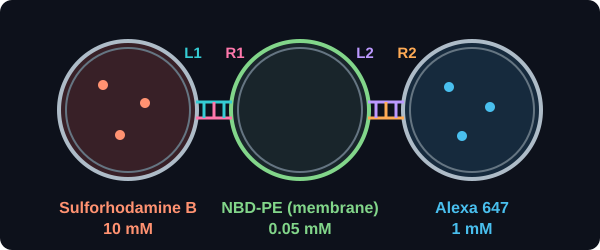
内水相の組成
| 成分 | 赤色GUV | 無蛍光GUV | 青色GUV |
|---|---|---|---|
| スクロース | 0.3 M | 0.3 M | 0.3 M |
| Tris-HCl | 10 mM | 10 mM | 10 mM |
| NaCl | 0.15 M | 0.15 M | 0.15 M |
| スルホローダミンB | 10 mM | — | — |
| Alexa 647 | — | — | 1 mM |
| Milli-Q | — | 色素溶液と同量 | — |
脂質含有オイルの組成
| 成分 | 赤色GUV | 無蛍光GUV | 青色GUV |
|---|---|---|---|
| POPC | 5 mM | 5 mM | 5 mM |
| コレステロール | 3.0 mM | 3.0 mM | 3.0 mM |
| NBD-PE | — | 0.05 mM | — |
接合の評価では、位相差像と蛍光像を照合し、接触した3個のGUVが左右反転も含めて赤色・無蛍光・青色の順に並ぶかを確認した。